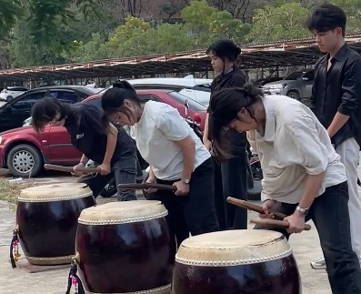
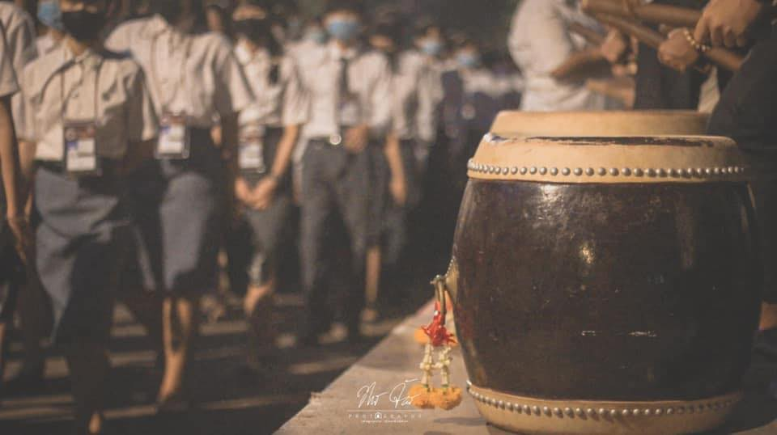
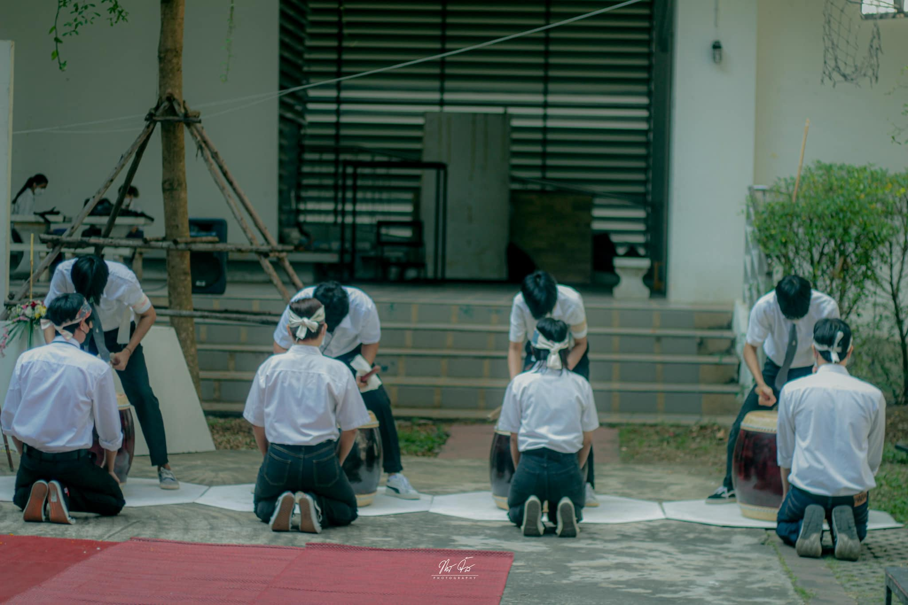
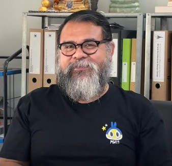
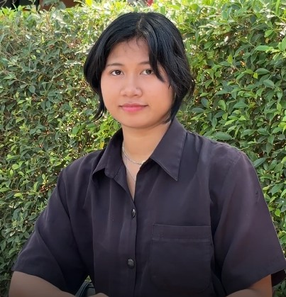
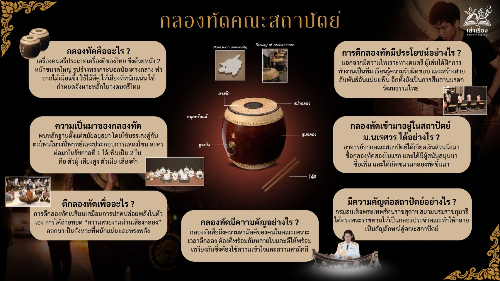
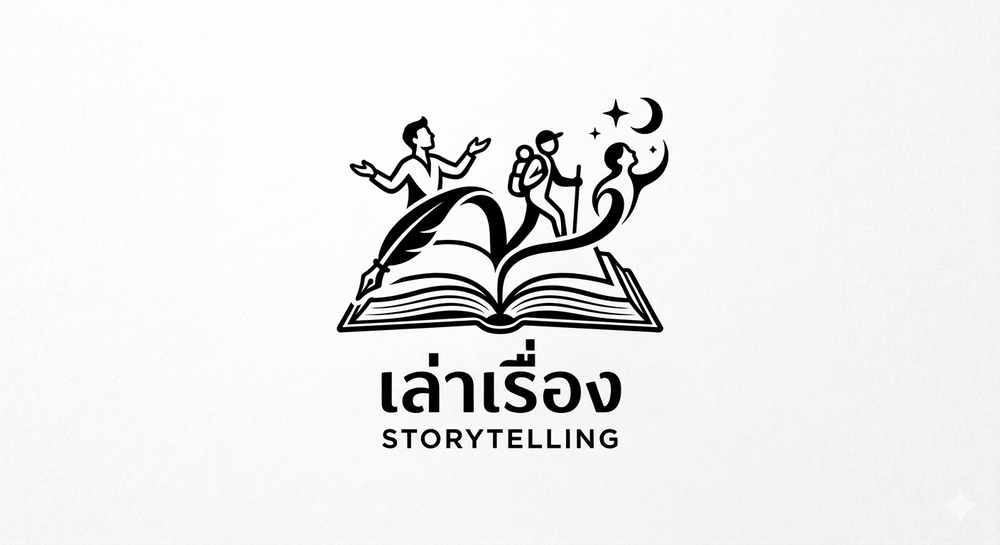

สัญลักษณ์แห่งความสามัคคีและจิตวิญญาณ
แห่งสถาปัตยกรรมไทย
จากเครื่องดนตรีไทยสู่สัญลักษณ์อันทรงเกียรติประจำคณะสถาปัตยกรรมศาสตร์ เสียงที่ดังกึกก้องคือเสียงของหัวใจที่เต้นพร้อมกัน

การฝึกซ้อมกลองของนักศึกษาคณะสถาปัตยกรรมศาสตร์
จุดเริ่มต้นแห่งตำนาน
จาก "กลองทอม" สู่ "กลองทัด"


กลองทัดเริ่มต้นบทบาทในแวดวงสถาปัตยกรรมจาก คณะสถาปัตยกรรมศาสตร์ จุฬาลงกรณ์มหาวิทยาลัย ซึ่งก่อนหน้านั้นมีการใช้ "กลองทอม" เป็นหลัก กระทั่งได้รับพระราชทานกลองทัดจาก สมเด็จพระกนิษฐาธิราชเจ้า กรมสมเด็จพระเทพรัตนราชสุดาฯ สยามบรมราชกุมารี ให้เป็นกลองประจำคณะ โดย 5 มหาวิทยาลัยแรกที่ได้รับพระราชทานกลองทัด ได้แก่ จุฬาลงกรณ์มหาวิทยาลัย มหาวิทยาลัยเกษตรศาสตร์ มหาวิทยาลัยศิลปากร มหาวิทยาลัยขอนแก่น และมหาวิทยาลัยเชียงใหม่ นับเป็นจุดเปลี่ยนสำคัญที่ทำให้กลองทัดกลายเป็นสัญลักษณ์คู่สถาปัตย์

สัญลักษณ์แห่งสถาปัตย์ทั่วไทย
ต่อมาคณะสถาปัตยกรรมศาสตร์ทั่วประเทศต่างนำกลองทัดมาใช้ ทั้งในการประกอบพิธีกรรม กิจกรรมสำคัญ และโดยเฉพาะกิจกรรมรับน้องที่เปี่ยมด้วยพลังและความหมาย กลายเป็นวัฒนธรรมร่วมที่เชื่อมโยงพี่น้องสถาปัตย์เข้าด้วยกัน
จุดเริ่มต้นและความหมายใน ม.นเรศวร

กลองทัดของคณะสถาปัตยกรรมศาสตร์ มหาวิทยาลัยนเรศวร เริ่มต้นจากความตั้งใจของอาจารย์ในคณะที่ได้เจียดเงินส่วนหนึ่งมาซื้อกลองทัดสองใบแรกให้กับคณะ ก่อนที่ต่อมาจะมีผู้สนใจร่วมสนับสนุนทุนในการจัดซื้อกลองเพิ่มเติม จนเกิดการรวมตัวของนักศึกษาที่สนใจ และมีการจัดตั้งชมรมกลองทัดขึ้นมา ทำให้การทำกิจกรรมมีความเป็นระบบและทีมมีความเข้มแข็งมากขึ้น
อาจารย์มองว่ากลองทัดเปรียบเสมือนเสียงดนตรีที่ช่วยระดมพลังและสร้างกำลังใจให้กับผู้คน เสียงกลองสามารถปลุกความฮึกเหิม ซึ่งสำหรับนักศึกษาอาจหมายถึงพลังในการสู้กับการเรียนและการใช้ชีวิตในมหาวิทยาลัย อีกทั้งยังเป็นกิจกรรมที่ทำให้คนในคณะได้มีโอกาสทำกิจกรรมร่วมกัน
นอกจากนี้ กลองทัดยังเป็นสัญลักษณ์ของการรวมจิตใจ เพราะการตีกลองต้องอาศัยกำลัง ความพร้อมเพรียง และจังหวะที่สอดคล้องกัน จึงจะทำให้เกิดเสียงที่เป็นหนึ่งเดียวกัน อีกทั้งกลองทัดยังมีความเกี่ยวข้องกับพิธีกรรมและวัฒนธรรมไทย จึงถือเป็นเครื่องดนตรีที่มีความสำคัญในเชิงวัฒนธรรม
การตีกลองทัดเป็นการฝึกตนเอง ผู้เล่นต้องใช้เวลาในการเรียนรู้จังหวะ การลงน้ำหนักของไม้ และต้องฝึกสมาธิในการควบคุมจังหวะของตนให้สอดคล้องกับผู้อื่น จึงเป็นกิจกรรมที่ช่วยฝึกทั้งทักษะและการควบคุมจิตใจ
เสียงแห่งหัวใจที่เต้นพร้อมกัน

กลองทัดไม่ได้เป็นเพียงเครื่องดนตรี หากแต่เป็น “สัญลักษณ์ของความสามัคคี” เพราะการบรรเลงกลองทัดต้องตีพร้อมกันหลายใบ จังหวะต้องแม่นยำ น้ำหนักต้องสอดประสาน ทุกคนต้องฟังกันและกัน เข้าใจกัน และเคลื่อนไหวไปในทิศทางเดียวกัน เสียงกลองที่ดังกึกก้องจึงไม่ใช่เพียงเสียงแห่งจังหวะ แต่คือเสียงของหัวใจที่เต้นพร้อมกันทั้งคณะ
ประโยชน์ของการตีกลองทัดจึงมีมากกว่าความไพเราะทางดนตรี ผู้เล่นได้ฝึกการทำงานเป็นทีม เรียนรู้ความรับผิดชอบ และสร้างสายสัมพันธ์อันแน่นแฟ้นระหว่างเพื่อนและพี่น้อง อีกทั้งยังเป็นการสืบสานมรดกวัฒนธรรมไทย เพราะกลองทัดเป็นหนึ่งในเครื่องดนตรีสำคัญของวงปี่พาทย์ที่มีรากเหง้าทางประวัติศาสตร์ยาวนาน
สำหรับน้องปีหนึ่งที่เพิ่งก้าวเข้ามาในรั้วมหาวิทยาลัย ความสนใจในกลองทัดเกิดขึ้นจากการได้เห็นวัฒนธรรมนี้สืบทอดกันมา และรับรู้ว่ากลองทัดเป็นสิ่งที่อยู่คู่สถาปัตย์มาอย่างยาวนาน ยิ่งทำให้รู้สึกถึงเกียรติและความภาคภูมิใจที่ได้มีโอกาสเป็นส่วนหนึ่ง
เส้นทางจากเสียงกลอง

การตีกลองทัดเปรียบเสมือนการปลดปล่อยพลังในตัวเอง ได้ออกแรง ได้ออกกำลังกาย และได้ถ่ายทอด “ความสวยงามผ่านเสียงกลอง” ออกมาเป็นจังหวะที่หนักแน่นและทรงพลัง ทว่าเส้นทางกว่าจะได้ขึ้นเล่นกลองใหญ่ไม่ใช่เรื่องง่าย ต้องใช้เวลาในการฝึกซ้อมอย่างต่อเนื่อง ฝึกจำลายตี เรียนรู้การใช้แรงและการลงน้ำหนักให้ถูกต้อง ทุกจังหวะล้วนต้องอาศัยความอดทนและวินัย
ท้ายที่สุด กลองทัดจึงไม่ใช่เพียงเสียงที่ก้องกังวานในกิจกรรม หากแต่เป็นบทเรียนชีวิตที่สอนเรื่องความสามัคคี ความพยายาม และความภาคภูมิใจในรากวัฒนธรรมไทย เสียงกลองที่ประสานกันอย่างพร้อมเพรียง จึงสะท้อนตัวตนของสถาปัตย์ได้อย่างงดงามและทรงพลังที่สุด
ทำความรู้จักลักษณะของกลองทัด

กลองทัด เป็นกลองขึงหนังสองหน้าขนาดใหญ่ใช้ไม้ตีให้เกิดเสียง หุ่นกลองมีรูปร่างเป็นทรงกระบอกป่องตรงกลาง ทำจากไม้เนื้อแข็งเจาะคว้านทะลุเป็นกล่องเสียง ขึงหน้ากลองทั้งสองหน้าด้วยหนังโคหรือกระบือ แล้วยึดติดกับหุ่นกลองด้วยหมุดที่ทำจากโลหะ งาช้าง หรือกระดูกสัตว์ ซึ่งเรียกว่า “แส้กลอง” ด้านหนึ่งมีหูโลหะเล็กๆ เรียกว่า “หูระวิง” สำหรับยึดกับขาหยั่งในการตั้งกลองกับพื้น
"สัญลักษณ์แห่งความสามัคคีและรากวัฒนธรรมไทย
เครื่องดนตรีที่สืบทอดมรดกทางวัฒนธรรมและความภาคภูมิใจของสถาปัตย์ไทย"
คณะผู้จัดทำ
เว็บไซต์นี้จัดทำขึ้นเพื่อใช้เป็นสื่อประกอบการศึกษาเกี่ยวกับกลองทัด คณะสถาปัตยกรรมศาสตร์ มหาวิทยาลัยนเรศวร
ภายใต้รายวิชา วารสารศาสตร์และสื่อการศึกษา (รหัสวิชา 814200)
ภาพประกอบจาก: Facebook ชมรมกลองทัด
